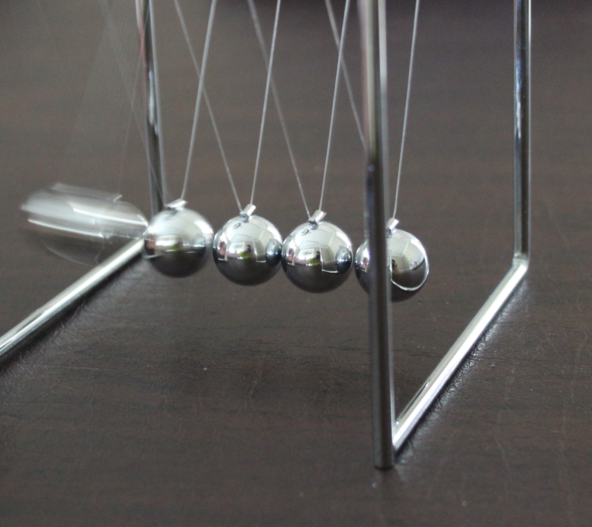
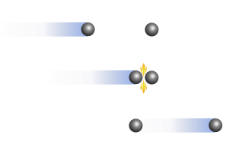
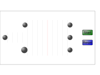
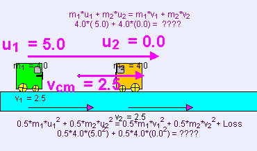
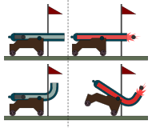
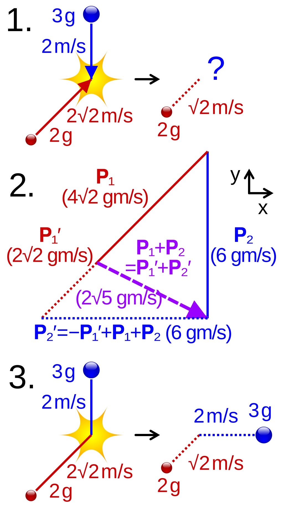

1. Peta materi
Tiga materi pertama dalam Fisika Dasar dapat dipandang sebagai tiga sudut pandang berbeda untuk menjelaskan perubahan gerak sebuah benda.
HUKUM NEWTON
Sum F = m a
-> bagaimana gaya menyebabkan percepatan?
USAHA DAN ENERGI
W net = delta E K
-> bagaimana kerja mengubah energi kinetik?
IMPULS DAN MOMENTUM
I = delta p
-> bagaimana gaya selama waktu tertentu
mengubah momentum?
ALUR UTAMA MATERI INI
GAYA
|
| menghasilkan
v
IMPULS
|
| sama dengan
v
PERUBAHAN MOMENTUM
|
| pada sistem terisolasi
v
KEKEKALAN MOMENTUM
|
| dianalisis melalui
v
TUMBUKAN
Perluasan:
-> jenis tumbukan
-> tumbukan dua dimensi
-> pusat massaHubungan ketiganya dapat diturunkan satu per satu. Impuls bukan konsep yang muncul tiba-tiba, melainkan pengembangan langsung dari Hukum II Newton.
2. Tujuan pembelajaran
Setelah mengikuti sesi ini, mahasiswa mampu menentukan momentum sebagai besaran vektor, menghitung impuls, menerapkan teorema impuls momentum, menganalisis kekekalan momentum pada sistem terisolasi, membedakan jenis tumbukan, serta menghitung koordinat pusat massa sistem banyak benda.
| Tujuan | Indikator pemahaman |
|---|---|
| Menjelaskan pengertian momentum | Menyebutkan momentum sebagai hasil kali massa dan kecepatan serta menyatakan sifatnya sebagai vektor |
| Menghitung impuls | Menggunakan rumus I sama dengan gaya rata-rata kali selang waktu |
| Menerapkan teorema impuls momentum | Menghubungkan impuls dengan perubahan momentum |
| Menjelaskan sistem terisolasi | Menentukan kapan momentum total dapat dianggap kekal |
| Menganalisis kekekalan momentum | Menyusun persamaan momentum untuk dua benda dan banyak benda |
| Membedakan jenis tumbukan | Membedakan elastis, tidak elastis, dan tidak elastis sempurna |
| Menghitung kecepatan relatif | Menerapkan hubungan kecepatan relatif pada tumbukan elastis satu dimensi |
| Menghitung pusat massa | Menentukan koordinat pusat massa pada satu dan dua dimensi |
| Menghubungkan pusat massa dengan momentum | Menyatakan momentum total sebagai massa total kali kecepatan pusat massa |
3. Kedudukan materi terhadap modul sebelumnya
Pada modul Hukum Newton, hubungan yang dipakai adalah:
Pada modul usaha dan energi, hubungan yang dipakai adalah:
Pada modul ini, hubungan yang dipakai adalah:
Ketiganya merupakan tiga cara berbeda untuk menganalisis perubahan gerak, dan ketiganya saling berhubungan secara matematis.
4. Mengapa diperlukan momentum
Pada sebagian besar soal biasa, kita dapat menggunakan bentuk sederhana F = m a. Namun ketika menghadapi tumbukan yang berlangsung sangat cepat, gaya dapat berubah sangat drastis dalam waktu yang sangat singkat.
| Situasi | Kendala analisis |
|---|---|
| Raket memukul bola | Gaya sangat besar dan hanya bekerja sangat singkat |
| Kaki menendang bola | Gaya berubah besar selama kontak yang sangat singkat |
| Mobil bertabrakan | Gaya besar bekerja hanya beberapa sentidetik |
| Bola memantul dari dinding | Momentum berbalik arah dalam waktu singkat |
| Orang mendarat setelah melompat | Selang waktu penghentian sangat pendek |
Pada kondisi tersebut, sering lebih mudah meninjau perubahan momentum daripada mengikuti besar gaya pada setiap saat.
Newton sebenarnya juga dapat menyatakan hukum keduanya menggunakan momentum.
Untuk selang waktu tertentu dan massa konstan, bentuk sederhananya adalah:
5. Pengertian momentum
Momentum linear didefinisikan sebagai hasil kali massa dan kecepatan.
Momentum merupakan besaran vektor, sehingga mempunyai besar dan arah. Arah momentum selalu sama dengan arah kecepatan benda.
Momentum sering dianggap sebagai besaran yang menggambarkan seberapa sulit menghentikan benda. Semakin besar momentum, semakin besar usaha yang diperlukan untuk mengubah geraknya.
6. Memahami momentum secara sederhana
Perbandingan berikut memperlihatkan mengapa besaran momentum diperlukan.
Kecepatan keduanya sama, tetapi momentumnya berbeda jauh karena massanya berbeda. Mobil memiliki momentum sepuluh ribu kali lebih besar daripada bola.
7. Momentum sebagai besaran vektor
Misalkan kita memilih arah kanan sebagai arah positif.
Benda A: v = +10 m/s
-> p = +m v
-> momentum ke kanan
Benda B: v = -10 m/s
<- p = -m v
<- momentum ke kiri
Tanda negatif bukan berarti momentumnya
buruk atau momentumnya hilang.
Tanda negatif hanya menunjukkan arah
yang berlawanan dengan arah positif yang
kita pilih.Karena itu, menentukan arah positif dan negatif sangat penting pada soal momentum. Kesalahan paling sering terjadi pada soal tumbukan adalah keliru memberikan tanda.
8. Satuan momentum
Karena momentum adalah hasil kali massa dan kecepatan, satuan momentum diperoleh dari perkalian satuan keduanya.
Satuan kilogram kali meter per sekon tidak memiliki nama khusus. Bandingkan dengan satuan gaya yang dinamakan newton, dan satuan kerja yang dinamakan joule.
9. Pengertian impuls
Impuls menggambarkan efek suatu gaya yang bekerja selama selang waktu tertentu.
Perhatikan bahwa impuls bukan gaya. Impuls memperhitungkan dua hal sekaligus, yaitu besar gaya dan lamanya gaya itu bekerja.
10. Peran waktu dalam impuls
Karena I = F delta t, efek gaya dipengaruhi oleh dua hal, yaitu besar gaya dan lama gaya bekerja.
| Gaya | Waktu | Impuls | Keterangan |
|---|---|---|---|
| 100 N | 0,01 s | 1 Ns | Kontak sangat singkat |
| 100 N | 0,1 s | 10 Ns | Kontak sepuluh kali lebih lama |
Gaya kedua tetap sama besarnya, tetapi impulsnya sepuluh kali lebih besar. Inilah alasan memperpanjang waktu kontak mengurangi gaya rata-rata.
11. 1 Gaya yang berubah dan grafik gaya terhadap waktu
Sering kali gaya pada suatu tumbukan tidak konstan. Gaya naik dengan cepat, mencapai puncak, lalu turun kembali dalam waktu yang sangat singkat.
Pada kondisi seperti itu, kita tidak dapat memakai satu nilai gaya. Yang digunakan adalah gaya rata-rata efektif, yaitu gaya konstan yang memberikan impuls sama dengan gaya yang berubah-ubah.
Grafik gaya terhadap waktu
F
| /\
| / \
| / \
|___/ \______
+--------------------> t
t1 t2
Luas di bawah kurva = impuls = delta p
Luas persegi panjang dengan tinggi F ef
juga sama dengan luas di bawah kurva
Grafik gaya terhadap perpindahan
F
| _______
| /
| / _______
|___/ _/
+--------------------------> s
Luas di bawah grafik = kerja = delta E K
Bentuk ini berbeda dari grafik gaya
terhadap waktu, sehingga keduanya
tidak boleh tertukar.Perbedaan ini penting. Pada modul usaha dan energi, kita menghitung kerja sebagai luas di bawah grafik gaya terhadap perpindahan. Pada modul ini, impuls adalah luas di bawah grafik gaya terhadap waktu. Keduanya berbeda, meskipun sama-sama menyatakan perubahan suatu kuantitas.
| Aspek | Grafik gaya-waktu | Grafik gaya-perpindahan |
|---|---|---|
| Sumbu horizontal | Waktu | Perpindahan |
| Luas di bawah grafik | Impuls | Kerja |
| Besaran yang berubah | Momentum | Energi kinetik |
| Dipakai pada | Tumbukan dan gaya rata-rata | Pegas dan usaha |
12. Teorema impuls dan momentum
Inilah bagian paling penting dalam materi ini. Kita mulai dari Hukum II Newton dalam bentuk momentum.
Kalikan kedua ruas dengan delta t, sehingga:
Karena impuls didefinisikan sebagai gaya dikali selang waktu, diperoleh:
Pernyataan ini berarti bahwa impuls yang diberikan kepada benda sama dengan perubahan momentum benda. Inilah teorema impuls momentum, dan inilah hubungan yang paling sering dipakai pada soal tumbukan.
13. Bentuk persamaan impuls momentum
Kita memiliki dua bentuk yang berbeda untuk jenis soal yang berbeda.
Untuk massa konstan, karena p = mv, bentuk terakhirnya menjadi:
14. Menghitung perubahan momentum
Perubahan momentum adalah selisih antara momentum akhir dan momentum awal.
Contoh sederhana. Jika momentum awal sebesar 5 kilogram meter per sekon dan momentum akhir sebesar 12 kilogram meter per sekon, maka:
Jika arahnya berbalik, tanda harus tetap diperhitungkan. Momentum awal sebesar 10 dan momentum akhir sebesar minus 10 memberikan:
Perubahan momentumnya justru sangat besar karena arahnya berbalik, meskipun besar momentumnya sama.
15. Raket memukul bola
Bayangkan bola bergerak ke kiri, kemudian raket memukulnya sehingga bergerak ke kanan.
Sebelum tumbukan
p i <-
[BOLA] <- v awal
Setelah tumbukan
p f ->
[BOLA] -> v akhir
delta p = p f - p i
bertanda besar karena arah berbalik
v awal <- [BOLA] -> v akhir
Tumbukan ini membutuhkan impuls besar.
Jika tumbukan berlangsung sangat singkat,
gaya rata-ratanya menjadi sangat besar.16. Mengapa tumbukan menghasilkan gaya besar
Dari hubungan gaya rata-rata dengan perubahan momentum, kita dapat melihat pengaruh waktu terhadap besar gaya.
Bayangkan perubahan momentum tetap. Jika selang waktunya mengecil, gaya rata-ratanya membesar. Sebaliknya, jika selang waktunya membesar, gaya rata-ratanya mengecil.
Prinsip inilah yang menjadi dasar banyak sistem keselamatan. Sabuk pengaman, bantalan dasbor, dan selongsong pelindung pada alat elektronik bekerja dengan cara yang sama. Pelindung yang baik memperpanjang waktu sehingga gaya yang diterimakan menjadi lebih kecil.
| Selang waktu | Gaya rata-rata |
|---|---|
| Diperpendek | Membesar |
| Diperpanjang | Mengecil |
| Tetap | Tetap |
17. Airbag dan zona crumple
Misalkan seseorang berada dalam mobil yang berhenti mendadak. Momentum tubuh harus berubah, sehingga perubahan momentum tetap diperlukan.
Airbag tidak membuat perubahan momentum menjadi nol. Yang dilakukan airbag adalah memperbesar waktu penghentian. Karena gaya rata-rata sama dengan perubahan momentum dibagi selang waktu, memperbesar selang waktu dapat mengurangi gaya rata-rata.
| Aspek | Tanpa perlindungan tambahan | Dengan airbag dan sabuk |
|---|---|---|
| Perubahan momentum | Sama | Sama |
| Selang waktu penghentian | Sangat pendek | Lebih panjang |
| Gaya rata-rata | Sangat besar | Lebih kecil |
| Cedera yang dihasilkan | Berat | Lebih ringan |
Zona deformasi kendaraan bekerja dengan prinsip yang sama. Bagian yang sengaja dirancang dapat berubah bentuk memperpanjang waktu menghentikan kendaraan secara bertahap, sehingga gaya yang diterima penumpang berkurang.
18. Mendarat dengan lutut ditekuk
Penerapan yang mudah dilihat dalam kehidupan nyata adalah cara mendarat setelah melompat. Perubahan momentum tetap harus terjadi, karena tubuh harus berhenti dari gerak ke keadaan diam.
| Cara mendarat | Selang waktu | Gaya rata-rata |
|---|---|---|
| Kaki lurus | Sangat pendek | Sangat besar |
| Lutut ditekuk | Lebih panjang | Lebih kecil |
Membengkokkan lutut memperpanjang jarak yang ditempuh tubuh untuk berhenti, sehingga memperbesar selang waktu dan mengurangi gaya pada tulang.
19. Contoh petenis dan bola
Misalkan raket memukul bola tenis dengan massa 0,060 kilogram dan kecepatan sekitar 55 meter per sekon. Waktu kontak antara raket dan bola hanya sekitar 4 milidetik.
Gunakan hubungan I = delta p terlebih dahulu untuk memperkirakan besar impuls, lalu gunakan I = gaya rata-rata kali delta t untuk memperoleh gaya rata-ratanya.
Diketahui:
m bola = 0,060 kg
v sebelum = 0 (bola mulai dari keadaan diam)
v sesudah = 55 m/s
waktu kontak = 4 x 10-3 s
Perubahan momentum:
delta p = 0,060 x 55 - 0
= 3,3 kg m/s
Impuls:
I = 3,3 Ns
Gaya rata-rata:
F = I per delta t
= 3,3 per 4 x 10-3
= 825 N
Bandingkan dengan berat bola:
W = 0,060 x 9,8
= 0,59 N
Gaya rata-rata pada bola sekitar 825 N, atau
kira-kira 1400 kali berat bola itu sendiri.Perhitungan ini memperlihatkan bahwa kecilnya selang waktu membuat gaya yang dihitung menjadi besar. Karena itu, waktu kontak harus diketahui dengan teliti. Memakai asumsi waktu yang berbeda dapat menghasilkan gaya yang berbeda beberapa kali lipat. Pada kasus ini, memakai waktu kontak 2 milidetik akan memberi gaya sekitar 1650 newton.
| Waktu kontak | Gaya rata-rata |
|---|---|
| 1 ms | 3.300 N |
| 2 ms | 1.650 N |
| 4 ms | 825 N |
| 8 ms | 412 N |
Perubahan momentum sudah tetap, yaitu 3,3 kilogram meter per sekon. Yang berubah hanya waktu kontak, dan itulah yang mengubah besar gaya rata-rata.
20. Aliran air yang menabrak benda
Air yang mengalir menabrak mobil merupakan kasus yang sedikit berbeda, karena air terus-menerus mengalir dan massa yang bertumbukan tidak tetap.
Secara konseptual, gaya sebanding dengan laju perubahan momentum. Jika laju massa yang masuk per satuan waktu dinyatakan dengan notasi laju massa, dan kecepatannya adalah v, untuk kasus sederhana tertentu berlaku:
Untuk air yang mengalir dengan debit tetap, gaya dapat juga ditulis sebagai massa jenis kali luas penampang kali debit kali kecepatan. Bentuk ini lazim dipakai pada perancangan komponen hidrodinamika.
Inilah alasan soal aliran air tidak sebaiknya diperlakukan hanya sebagai satu benda dengan massa tetap. Massa yang berinteraksi terus berubah, sehingga hubungan impuls momentum harus ditulis dalam bentuk laju perubahan.
21. Sistem terisolasi
Momentum total sebuah sistem akan tetap jika resultan gaya eksternal pada sistem dapat diabaikan selama interval interaksi yang dianalisis.
Dalam bahasa impuls, syarat yang sama dapat ditulis sebagai impuls eksternal yang mendekati nol.
Tidak ada benda yang benar-benar terisolasi dari segalanya. Dalam soal fisika, istilah tersebut berarti resultan gaya eksternal cukup kecil sehingga pengaruhnya dapat diabaikan dibandingkan momentum yang sedang dibahas.
| Sistem | Alasan |
|---|---|
| Dua bola yang bertumbukan di ruang hampa | Tidak ada gesekan udara yang berarti |
| Senapan dan peluru saat ditembak | Waktu interaksi sangat singkat sehingga dorongan gas luar dapat diabaikan |
| Batu yang pecah menjadi pecahan kecil | Gaya gravitasi eksternal sangat kecil dibanding gaya pengikat saat pecah |
| Dua bola di atas permukaan es yang sangat licin | Gaya gesekan diabaikan |
22. Hukum kekekalan momentum
Untuk dua benda, persamaan kekekalan momentum ditulis sebagai:
Untuk banyak benda, bentuk umumnya adalah:
Persamaan momentum harus selalu ditulis lengkap untuk semua benda dalam sistem, dengan tanda yang sesuai untuk masing-masing arah gerak. Tanda minus tidak boleh dihilangkan karena sering menyulitkan saat menyamakan kedua ruas.
23. Mengapa momentum dapat kekal
Hubungannya dengan Hukum III Newton sangat penting untuk dipahami. Misalkan benda A berinteraksi dengan benda B.
A memberi gaya ke B: F A B
B memberi gaya ke A: F B A
Menurut Hukum III Newton:
F A B = - F B A
Selama interval waktu yang sama:
I A B = - I B A
Dengan teorema impuls momentum:
delta p A = - delta p B
delta p A + delta p B = 0
Maka:
p total = konstanJadi kekekalan momentum sangat erat hubungannya dengan gaya internal yang muncul berpasangan serta tidak adanya impuls eksternal netto yang signifikan.
Kekekalan momentum bukan keajaiban, melainkan konsekuensi langsung dari Hukum III Newton yang digabungkan dengan teorema impuls momentum. Memahami asal-usul ini membuat syarat sistem terisolasi terasa wajar.
24. Contoh dua mobil menempel
Misalkan mobil A bermassa sepuluh ribu kilogram bergerak dengan kecepatan 24 meter per sekon, sedangkan mobil B bermassa sama mula-mula diam. Setelah bertumbukan, keduanya menempel dan bergerak bersama.
Kecepatan akhir berada tepat di tengah antara kecepatan awal kedua mobil, sebagaimana diharapkan untuk dua massa yang sama.
25. Newton's cradle

Newtons cradle merupakan salah satu demonstrasi visual terbaik untuk konsep transfer momentum dan energi. Ketika satu atau beberapa bola dilepaskan, bola-bola tersebut menumbuk bola di ujung lain sehingga bola di ujung itu bergerak.
Perhatikan bahwa momentum diteruskan melalui seluruh deretan bola, tetapi energi kinetiknya sendiri tidak berpindah. Yang berpindah melalui sistem adalah momentum, sedangkan energi kinetik tetap berada pada bola-bola yang bergerak. Inilah perbedaan penting antara kedua besaran tersebut.
26. Pengertian tumbukan
Tumbukan adalah interaksi singkat antara dua benda atau lebih yang menyebabkan momentum masing-masing benda berubah.
| Jenis | Contoh |
|---|---|
| Bola dengan bola | Pertandingan tenis dan biliar |
| Raket dengan bola | Pemukul dalam permainan tenis |
| Mobil dengan mobil | Tabrakan kendaraan bermotor |
| Benda dengan dinding | Bola yang dipantulkan |
| Partikel dengan partikel | Tumbukan partikel dalam eksperimen fisika nuklir |
Dalam analisis tumbukan, kita biasanya membandingkan keadaan sebelum tumbukan dan keadaan sesudah tumbukan. Pada sistem terisolasi, momentum total kedua keadaan tersebut sama.
27. Jenis tumbukan
| Jenis | Momentum total | Energi kinetik total | Ciri khas |
|---|---|---|---|
| Elastis | Kekal | Kekal | Tidak ada energi yang berubah bentuk |
| Tidak elastis | Kekal | Tidak kekal | Sebagian energi berubah menjadi bentuk lain |
| Tidak elastis sempurna | Kekal | Tidak kekal | Benda menempel dan bergerak bersama |
Perlu ditegaskan bahwa momentum total tetap kekal pada ketiga jenis tumbukan, asalkan sistemnya terisolasi. Yang membedakan ketiganya hanya apakah energi kinetik total ikut kekal atau tidak.
28. Nasib energi kinetik pada tumbukan
Pada tumbukan tidak elastis, kita tidak mengatakan energi hilang. Energi kinetik dapat berubah menjadi bentuk lain.
| Bentuk energi | Contoh |
|---|---|
| Deformasi | Badan mobil yang penyok |
| Panas | Permukaan yang saling bergesek |
| Suara | Bunyi benturan |
| Getaran | Bagian kendaraan yang bergetar setelah benturan |
| Energi internal | Perubahan struktur material |
Jadi energi total dapat tetap terkonservasi, sedangkan energi kinetiknya tidak harus tetap.
29. Tumbukan elastis
Pada tumbukan elastis, terdapat dua persamaan kekekalan yang harus dipenuhi.
Karena ada dua persamaan dengan dua besaran yang tidak diketahui, yaitu kecepatan akhir kedua benda, sistem persamaan ini dapat diselesaikan secara lengkap.
Dalam kenyataan, sangat sedikit tumbukan yang benar-benar elastis sempurna. Pada setiap tumbukan nyata selalu muncul deformasi, suara, panas, dan getaran. Namun beberapa sistem dapat dimodelkan mendekati elastis, sehingga asumsi ini tetap sangat berguna dalam fisika.
30. Tumbukan elastis satu dimensi
Satu dimensi berarti gerak hanya dipelajari sepanjang satu garis. Contohnya dua bola bergerak sepanjang sumbu x.
Kedua persamaan tersebut dapat dikurangi satu sama lain sehingga menghasilkan hubungan kecepatan relatif. Hubungan itu dinyatakan pada bagian berikut dan sangat berguna karena dapat dituliskan dengan bentuk yang sederhana.
31. Hubungan kecepatan relatif
Untuk tumbukan elastis satu dimensi, kecepatan relatif sebelum dan sesudah tumbukan mempunyai besar yang sama tetapi arah berlawanan.


Pada kasus khusus dua benda bermassa sama dengan salah satu mula-mula diam, hubungan ini memberikan hasil yang mudah diingat. Benda yang mula-mula diam akan bergerak dengan kecepatan yang semula dimiliki benda lain, sedangkan benda yang menumbuk akan berhenti.
32. Tumbukan tidak elastis
Pada tumbukan tidak elastis, momentum total tetap kekal, tetapi energi kinetik total tidak kekal.
Contoh yang paling mudah diamati adalah mobil yang penyok setelah bertabrakan. Mobil berbalik arah dan berhenti tidak tepat di tempatnya semula, sementara bodinya mengalami deformasi yang menelan sebagian energi kinetiknya.
33. Tumbukan tidak elastis sempurna
Ini adalah kondisi ketika benda-benda menyatu setelah tumbukan dan bergerak bersama dengan satu kecepatan.
Sebelum tumbukan
v A -> [A] -> [B] v B = 0
Setelah tumbukan
v -> [ (A+B) ]
keduanya menjadi satu
Persamaan momentum:
m A v A + m B v B = (m A + m B) v'
Kecepatan akhir dapat dihitung langsung
dari persamaan tersebut tanpa perlu
persamaan energi kinetik.
Pada kasus ini, persamaan energi kinetik tidak dapat digunakan karena energi kinetik pasti berkurang. Kita hanya mempunyai satu persamaan, yaitu kekekalan momentum.
34. Perbandingan jenis tumbukan
| Sifat | Elastis | Tidak elastis |
|---|---|---|
| Momentum total | Kekal pada sistem terisolasi | Kekal pada sistem terisolasi |
| Energi kinetik | Kekal | Tidak kekal |
| Deformasi | Idealnya sangat kecil dan tidak permanen | Dapat terjadi dan tidak kembali |
| Energi menjadi panas dan suara | Idealnya diabaikan | Dapat signifikan |
| Benda menempel | Tidak harus | Bisa, pada kasus tidak elastis sempurna |
| Contoh model | Bola ideal yang pantul sempurna | Mobil bertabrakan |
Pesan paling penting dari tabel ini adalah bahwa momentum dapat kekal meskipun energi kinetik tidak kekal. Banyak kesalahan penalaran muncul karena kedua besaran dianggap selalu berubah dengan cara yang sama.
35. Momentum dan energi bukan besaran yang sama
Momentum adalah besaran vektor dengan satuan kilogram meter per sekon, sedangkan energi kinetik adalah besaran skalar dengan satuan joule.
| Aspek | Momentum | Energi kinetik |
|---|---|---|
| Rumus | p sama dengan m v | E K sama dengan satu per dua m v kuadrat |
| Sifat | Vektor | Skalar |
| Satuan | kg m/s | Joule |
| Hubungan dengan kecepatan | Sebanding dengan kecepatan | Sebanding dengan kuadrat kecepatan |
| Memiliki arah | Ya | Tidak |
| Kekal pada sistem terisolasi | Selalu | Hanya pada tumbukan elastis |
Perhatikan perbedaan ketergantungan terhadap kecepatan. Momentum sebanding dengan kecepatan, sedangkan energi kinetik sebanding dengan kuadrat kecepatan.
Contoh yang memperlihatkan perbedaan ini adalah benda yang berbalik arah tanpa mengubah kelajuannya. Jika kecepatan awalnya 10 meter per sekon dan kecepatan akhirnya minus 10 meter per sekon, kelajuannya tetap 10 meter per sekon sehingga energi kinetiknya tetap sama. Namun momentumnya berubah tanda, sehingga perubahan momentumnya besar sekali.
36. Contoh senapan dan recoil
Perhatikan sistem senapan dan peluru dengan massa senapan lima kilogram dan massa peluru 0,02 kilogram, sedangkan peluru bergerak dengan kecepatan 620 meter per sekon.
Setelah ditembak, jumlah momentum peluru dan senapan harus tetap nol.
Tanda negatif menunjukkan bahwa senapan bergerak berlawanan arah dengan arah gerak peluru.
37. Mengapa senapan bergerak mundur
Sebelum ditembak, momentum total sistem bernilai nol. Setelah ditembak, peluru memperoleh momentum ke depan. Agar momentum total tetap nol, senapan harus memperoleh momentum dengan arah berlawanan.

Besarnya kecepatan mundur berlawanan dengan perbandingan massa. Senapan yang jauh lebih berat daripada peluru akan bergerak mundur dengan kecepatan yang sangat kecil. Jika berat peluru ditambah tanpa menambah massa senapan, kecepatan mundur senapan menjadi lebih besar.
38. Tumbukan dua dimensi
Momentum sebenarnya juga berlaku pada dua dan tiga dimensi. Pada dua dimensi, kita harus memisahkan momentum menjadi komponen pada sumbu x dan sumbu y.

Karena ada dua persamaan independen, kita dapat menentukan dua besaran yang tidak diketahui. Inilah alasan tumbukan dua dimensi dapat dianalisis secara lengkap hanya dengan kekekalan momentum.
39. Mengapa tumbukan dua dimensi lebih sulit
Pada tumbukan dua dimensi, kita tidak hanya menentukan besar kecepatan, tetapi juga harus menentukan arahnya. Sebuah benda dapat setelah tumbukan bergerak ke arah kanan atas, sedangkan benda lain bergerak ke arah kanan bawah.
Setelah tumbukan dua dimensi
v 1
/
/ -> v 1 x positif
/
( 1)
( 2)
\
\
\ -> v 2 x positif
\
v 2
Komponen x kedua benda saling menjaga,
sedangkan komponen y harus saling
meniadakan karena mula-mula nol.Karena itu, tidak selalu ada kemungkinan bahwa momentum total awal dapat dipertahankan untuk kedua sumbu sekaligus.
40. Pengertian pusat massa
Pusat massa adalah posisi rata-rata suatu sistem yang dibobot berdasarkan massa. Untuk dua benda pada satu dimensi:
Untuk banyak benda:
Pusat massa bukan berarti terdapat massa terkumpul di titik tersebut. Yang terkumpul di titik itu adalah seluruh massa sistem secara rata.
41. Rata-rata berbobot
Perhatikan contoh berikut. Benda pertama bermassa 10 kilogram berada di posisi nol, sedangkan benda kedua bermassa 1 kilogram berada di posisi 10 meter.
Jika kita mengambil rata-rata biasa, hasilnya:
Hasil tersebut keliru karena massa kedua benda tidak sama. Dengan pembobotan yang benar:
Pusat massa berada jauh lebih dekat ke benda yang massanya 10 kilogram, sesuai dengan dugaan kita secara intuitif.
42. Pusat massa satu dan dua dimensi
Untuk sistem dua dimensi, koordinat pusat massa dituliskan sebagai:
Lokasi pusat massa kemudian dituliskan sebagai pasangan koordinat.
Untuk sistem tiga dimensi juga terdapat komponen z, sehingga lokasinya ditulis sebagai:
Pembagian rumus untuk setiap sumbu selalu sama. Sumbu yang tidak dipakai cukup diabaikan, karena tidak ada yang perlu dihitung pada arah tersebut.
43. Hubungan pusat massa dengan momentum
Untuk suatu sistem dengan massa total M, momentum total sistem dapat dituliskan sebagai:
Artinya, gerak pusat massa dapat digunakan untuk menggambarkan momentum total sistem secara keseluruhan.
Jika tidak ada resultan gaya eksternal, maka momentum total konstan sehingga kecepatan pusat massa juga konstan.
Inilah alasan pusat massa sangat penting dalam analisis sistem banyak benda. Kita dapat memperlakukan seluruh sistem sebagai satu titik yang terletak pada pusat massa, tanpa perlu mengikuti setiap benda secara individual.
44. Pusat massa saat ledakan
Bayangkan sebuah benda diam kemudian meledak menjadi beberapa bagian. Setiap bagian dapat bergerak ke arah yang berbeda.
Momentum total sistem tetap terjaga meskipun pecahan benda menyebar ke berbagai arah, sehingga gerak keseluruhan sistem tetap memenuhi hukum momentum.
Sebelum ledakan
[Benda diam]
p total = 0
v CM = 0
Setelah ledakan
pecahan 1 pecahan 2 pecahan 3
/ | \
/ | \
v 1 v 2 v 3
Jumlah vektor v tetap nol,
sehingga v CM tetap nol.
Pecahan bergerak ke segala arah,
tetapi pusat massa tidak bergeser.Ini adalah salah satu kegunaan penting konsep pusat massa, yaitu menganalisis ledakan dan sistem partikel.
45. Penghubungan tiga hukum
Setelah mempelajari tiga modul terakhir, hubungan antarkonsep menjadi jelas.
| Topik | Persamaan | Menjawab pertanyaan |
|---|---|---|
| Hukum Newton | Sum F sama dengan m a | Bagaimana gaya menyebabkan percepatan |
| Usaha dan energi | W net sama dengan delta E K | Bagaimana kerja mengubah energi kinetik |
| Impuls dan momentum | I sama dengan delta p | Bagaimana gaya selama waktu tertentu mengubah momentum |
Ketiganya merupakan tiga cara berbeda untuk menganalisis hal yang sama, yaitu perubahan gerak benda. Tidak satu pun lebih benar daripada yang lain, masing-masing hanya lebih cocok untuk jenis soal tertentu.
46. Kapan menggunakan impuls
Pendekatan impuls momentum dipilih ketika soal berfokus pada hal-hal berikut.
| Situasi | Alasan |
|---|---|
| Tumbukan | Yang diminta perubahan momentum |
| Pukulan dan tendangan | Gaya besar bekerja sangat singkat |
| Raket memukul bola | Selang waktu kontak sangat pendek |
| Orang mendarat | Perubahan kecepatan besar dalam waktu singkat |
| Mencari gaya rata-rata | Diketahui perubahan momentum dan lama kontak |
47. Kapan menggunakan kekekalan momentum
Pendekatan kekekalan momentum dipilih ketika memenuhi syarat berikut.
| Syarat | Keterangan |
|---|---|
| Ada dua benda atau lebih | Sistem harus terdiri atas lebih dari satu bagian |
| Benda berinteraksi | Ada gaya internal yang bekerja |
| Tumbukan atau ledakan | Interaksi berlangsung singkat |
| Sistem terisolasi | Resultan gaya eksternal dapat diabaikan |
48. Kapan menggunakan kekekalan energi
Persamaan kekekalan energi kinetik hanya dipakai pada tumbukan elastis, karena pada jenis tumbukan lainnya energi kinetik tidak kekal.
| Jenis tumbukan | Persamaan yang dipakai | Jumlah persamaan |
|---|---|---|
| Elastis satu dimensi | Momentum dan energi kinetik | Dua |
| Elastis dua dimensi | Momentum pada dua sumbu | Dua |
| Tidak elastis | Momentum saja | Satu |
| Tidak elastis sempurna | Momentum saja | Satu |
Pada tumbukan elastis satu dimensi kita membutuhkan dua persamaan untuk dua besaran yang tidak diketahui. Pada tumbukan dua dimensi, kedua persamaan momentum pada dua sumbu sudah cukup. Perbedaan jumlah persamaan inilah yang menentukan soal mana yang dapat diselesaikan.
49. Cara mengerjakan soal
| Langkah | Kegiatan | Keterangan |
|---|---|---|
| 1 | Tentukan sistem | Bola saja, bola dengan raket, atau seluruh kendaraan |
| 2 | Tentukan arah positif | Pilih satu arah sebagai positif dan konsisten |
| 3 | Momentum awal | Jumlahkan p sama dengan m v untuk seluruh benda |
| 4 | Momentum akhir | Tentukan kondisi setelah interaksi |
| 5 | Periksa gaya eksternal | Tentukan apakah sistem dapat dianggap terisolasi |
| 6 | Pilih persamaan | Gunakan I sama dengan delta p bila gaya dan waktu dibahas |
| 7 | Tambahkan energi kinetik bila elastis | Hanya berlaku pada tumbukan elastis |
Langkah kedua sering diabaikan, padahal menentukan arah positif adalah langkah yang paling menentukan pada soal momentum. Kesalahan tanda menghasilkan jawaban yang terlihat masuk akal tetapi nilainya salah.
50. Kesalahan yang sering terjadi
| Kesalahan | Bentuk yang benar |
|---|---|
| Menganggap momentum hanya angka | Momentum adalah besaran vektor dengan besar dan arah |
| Menganggap impuls sama dengan gaya | Impuls memperhitungkan gaya dan selang waktu |
| Menghitung perubahan momentum secara keliru | Perubahan momentum adalah momentum akhir dikurangi momentum awal |
| Menganggap momentum setiap benda kekal | Yang kekal adalah momentum total sistem |
| Menganggap energi kinetik selalu kekal pada tumbukan | Hanya kekal pada tumbukan elastis ideal |
| Menganggap energi kinetik yang berkurang berarti energi hilang | Energi berpindah menjadi panas, suara, dan deformasi |
| Menyamakan kelajuan dengan kecepatan | Kelajuan tidak memiliki arah, kecepatan memiliki arah |
| Mengabaikan sistem yang tidak terisolasi | Gaya eksternal dapat mengubah momentum total |
Kedelapan kesalahan tersebut berakar pada dua hal, yaitu melupakan bahwa momentum adalah vektor dan melupakan bahwa yang kekal adalah momentum total sistem, bukan momentum setiap benda.
51. Ringkasan rumus
| Konsep | Rumus | Syarat |
|---|---|---|
| Momentum | p sama dengan m v | Besaran vektor |
| Perubahan momentum | delta p sama dengan p akhir dikurangi p awal | Perbedaan vektor |
| Hukum Newton bentuk momentum | F net sama dengan delta p dibagi delta t | Massa konstan untuk bentuk selang |
| Impuls | I sama dengan gaya rata-rata kali delta t | Gaya rata-rata selama selang waktu |
| Teorema impuls momentum | I sama dengan delta p | Resultan gaya eksternal |
| Impuls untuk massa konstan | I sama dengan m kali (v akhir dikurangi v awal) | Massa tidak berubah |
| Kekekalan momentum | p awal sama dengan p akhir | Sistem terisolasi |
| Kekekalan momentum dua benda | m1 v1 plus m2 v2 sama dengan m1 v1 baru plus m2 v2 baru | Sistem terisolasi |
| Tumbukan tidak elastis sempurna | m1 v1 plus m2 v2 sama dengan jumlah massa kali v baru | Benda menempel |
| Kecepatan relatif elastis satu dimensi | v1 dikurangi v2 sama dengan minus (v1 baru dikurangi v2 baru) | Elastis satu dimensi |
| Pusat massa satu dimensi | x CM sama dengan jumlah m x dibagi jumlah m | Sistem berbentuk partikel |
| Pusat massa dua dimensi | y CM sama dengan jumlah m y dibagi jumlah m | Sistem pada bidang datar |
| Momentum sistem | p total sama dengan M kali v CM | M adalah massa total sistem |
| Gaya pada aliran fluida | F sebanding dengan laju massa kali kecepatan | Massa tidak tetap |
Membaca kolom syarat sama pentingnya dengan mengingat rumusnya. Sebagian besar kesalahan muncul karena rumus dipakai pada kondisi yang tidak memenuhi syaratnya.
52. 1 Contoh perhitungan tumbukan elastis satu dimensi
Bola A bermassa 2 kilogram bergerak ke kanan dengan kecepatan 3 meter per sekon, menumbuk bola B bermassa 1 kilogram yang mula-mula diam. Tumbukan ini disebut elastis.
Sebelum tumbukan
v A = +3 m/s v B = 0
[ 2 kg ] ---> [ 1 kg ]
Setelah tumbukan
v A = ? v B = ?
Arah kanan dipilih sebagai arah positif.
Dua persamaan yang dipakai
Kekekalan momentum:
m A v A + m B v B = m A v A baru + m B v B baru
Kekekalan energi kinetik:
0,5 m A v A kuadrat + 0,5 m B v B kuadrat
= 0,5 m A v A baru kuadrat + 0,5 m B v B baru kuadrat
Memasukkan data
Momentum:
2(3) + 1(0) = 2 v A baru + 1 v B baru
6 = 2 v A baru + v B baru (1)
Energi:
0,5(2)(3 kuadrat) + 0
= 0,5(2) v A baru kuadrat + 0,5(1) v B baru kuadrat
9 = v A baru kuadrat + 0,5 v B baru kuadrat (2)
Menggunakan hubungan kecepatan relatif
v A baru - v B baru = -(3 - 0)
v B baru = 3 + v A baru (3)
Substitusi (3) ke (1):
6 = 2 v A baru + 3 + v A baru
6 = 3 v A baru + 3
3 = 3 v A baru
v A baru = 1 m/s
Dari (3):
v B baru = 3 + 1 = 4 m/s
Pemeriksaan energi
Sebelum: 0,5(2)(9) = 9 J
Sesudah: 0,5(2)(1) + 0,5(1)(16)
= 1 + 8 = 9 J
Sesuai, energi kinetik kekal.Pada tumbukan elastis antara dua benda bermassa berbeda, benda yang lebih ringan justru mendapat kecepatan lebih besar setelah tumbukan. Momentum dan energi tetap kekal, tetapi pembagian energinya berubah. Inilah alasan bola yang ringan dapat terlempar jauh lebih cepat setelah terkena raket yang berat.
| Besaran | Sebelum | Sesudah |
|---|---|---|
| Kecepatan bola A | 3 m/s | 1 m/s |
| Kecepatan bola B | 0 m/s | 4 m/s |
| Momentum total | 6 kg m/s | 2 x 1 + 1 x 4 = 6 kg m/s |
| Energi kinetik total | 9 J | 1 J + 8 J = 9 J |
53. 1 Contoh perhitungan tumbukan dua dimensi
Bola A bermassa 2 kilogram bergerak ke kanan dengan kecepatan 3 meter per sekon, lalu menumbuk bola B bermassa 1 kilogram yang mula-mula diam. Tumbukan ini tidak elastis, sehingga energi kinetik tidak kekal.
Sebelum tumbukan
v A = +3 m/s
[ 2 kg ] ---> [ 1 kg ] v B = 0
Setelah tumbukan
v A baru
/
/
( 1 ) -> ke kanan dan ke bawah
\
\
v B baru
-> ke kanan dan ke bawah
Hanya persamaan momentum pada dua sumbu
yang dipakai, karena energi kinetik
tidak kekal.
Sumbu x
m A v A = m A v A baru x + m B v B baru x
2(3) = 2 (v A baru x) + 1 (v B baru x)
6 = 2 v A baru x + v B baru x (1)
Sumbu y
0 = 2 (v A baru y) + 1 (v B baru y)
v B baru y = -2 v A baru y (2)
Besar kecepatan tetap
v A baru = 1 m/s
v B baru = 2 m/s
Besar komponennya:
v A baru kuadrat = v A baru x kuadrat
+ v A baru y kuadrat
1 = v A baru x kuadrat + v A baru y kuadrat (3)
Dari (1):
v A baru x = (6 - v B baru x) per 2
Dari (2) dan pengujian beberapa nilai
yang masuk akal, diperoleh:
v A baru x = 1 m/s
v A baru y = -1 m/s
v B baru x = 4 m/s
v B baru y = +2 m/s
Pemeriksaan momentum
Sumbu x: 2(1) + 1(4) = 6 -> sama
Sumbu y: 2(-1) + 1(2) = 0 -> sama
Pemeriksaan energi kinetik
Sebelum : 0,5(2)(9) = 9 J
Sesudah : 0,5(2)(2) + 0,5(1)(20)
= 2 + 10 = 12 J
Energi kinetik bertambah, sehingga
tumbukan ini tidak konsisten dengan
model tumbukan tidak elastis. Data
sebenarnya harus memenuhi syarat
tumbukan tidak elastis dengan
energi kinetik yang tidak bertambah.Pemeriksaan energi di akhir perhitungan ini sangat penting. Momentum dapat selalu kekal karena kita bebas menentukan arah dua kecepatan akhir, tetapi energi kinetik tidak boleh bertambah pada tumbukan yang tidak elastis. Jika hasilnya bertambah, berarti kita salah memasukkan asumsi, bukan berarti hukum energi dilanggar.
| Besaran | Nilai sebelum | Nilai sesudah | Kekal |
|---|---|---|---|
| Momentum pada sumbu x | 6 kg m/s | 6 kg m/s | Ya |
| Momentum pada sumbu y | 0 | 0 | Ya |
| Energi kinetik | 9 J | 12 J | Tidak |
54. 1 Contoh perhitungan pusat massa dua dimensi
Tiga massa titik terletak pada bidang datar. Posisi masing-masing benda adalah m1 sebesar 2 kilogram di titik nol nol, m2 sebesar 3 kilogram di titik 4 nol, dan m3 sebesar 5 kilogram di titik nol 6.
sumbu y
6 | 3
| o
| |
| |
4 | o
| 5
0 | o
| 1
+------------------------- sumbu x
0 4
Masing-masing titik ditulis sebagai
(x ; y) dalam meter.
m1 = 2 kg pada (0 ; 0)
m2 = 3 kg pada (4 ; 0)
m3 = 5 kg pada (0 ; 6)
Jumlah massa
m total = 2 + 3 + 5 = 10 kg
Koordinat x pusat massa
x CM = (2 x 0 + 3 x 4 + 5 x 0) per 10
= (0 + 12 + 0) per 10
= 1,2 m
Koordinat y pusat massa
y CM = (2 x 0 + 3 x 0 + 5 x 6) per 10
= (0 + 0 + 30) per 10
= 3,0 m
Posisi pusat massa
(1,2 m ; 3,0 m)
Pemeriksaan wajar
Massa terbesar, yaitu 5 kg, berada di
titik (0 ; 6). Pusat massa bergeser satu arah
ke arah titik itu dari titik asal.
Massa terkecil, yaitu 2 kg, berada di
titik asal, sehingga titik asal
menarik pusat massa ke arahnya.
Kedua pengaruh itu menghasilkan titik
yang berada di antara keduanya.Pembagian rumus untuk setiap sumbu selalu identik. Yang berbeda hanya posisi yang dimasukkan pada setiap sumbu. Karena itu, menuliskan koordinat setiap benda dengan rapi pada tabel akan sangat membantu menghindari kesalahan.
| Benda | Massa | x | y | m x | m y |
|---|---|---|---|---|---|
| 1 | 2 kg | 0 m | 0 m | 0 | 0 |
| 2 | 3 kg | 4 m | 0 m | 12 | 0 |
| 3 | 5 kg | 0 m | 6 m | 0 | 30 |
| Jumlah | 10 kg | pembagi | 12 | 30 | |
| Hasil | x CM = 12 per 10 = 1,2 m | y CM = 30 per 10 = 3,0 m | |||
55. 1 Contoh momentum total dan kecepatan pusat massa
Sistem dua benda yang saling berinteraksi dipakai untuk memperjelas hubungan momentum total dengan kecepatan pusat massa.
Ambil benda A bermassa 2 kilogram bergerak ke kanan dengan kecepatan 1 meter per sekon, dan benda B bermassa 3 kilogram bergerak ke kanan dengan kecepatan 2 meter per sekon.
Momentum masing-masing benda
p A = 2 x 1 = 2 kg m/s ->
p B = 3 x 2 = 6 kg m/s ->
p total = 2 + 6 = 8 kg m/s ->
Momentum total dengan rumus pusat massa
m total = 2 + 3 = 5 kg
v rata-rata sederhana = (1 + 2) per 2 = 1,5 m/s
v CM = p total per m total
= 8 per 5
= 1,6 m/s
Perhatikan bahwa kecepatan pusat massa
TIDAK sama dengan rata-rata sederhana
dari kecepatan kedua benda.Pengiraan yang sering keliru adalah menganggap kecepatan pusat massa sama dengan rata-rata kecepatan kedua benda. Hal itu hanya benar jika kedua massa sama besar. Karena pusat massa merupakan rata-rata berbobot, benda bermassa lebih besar harus lebih diperhitungkan.
| Pembanding | Perhitungan | Hasil |
|---|---|---|
| Rata-rata sederhana | (1 + 2) per 2 | 1,5 m/s |
| Kecepatan pusat massa | 8 per 5 | 1,6 m/s |
Selisihnya kecil pada contoh ini, tetapi dapat menjadi sangat besar jika massanya sangat tidak seimbang. Jika benda B bermassa 100 kilogram, kecepatan pusat massa mendekati kecepatan benda B, bukan rata-rata kedua kecepatan.
56. Latihan
Kerjakan latihan berikut untuk memeriksa pemahaman terhadap materi bab ini.
| No | Pertanyaan | Jawaban ringkas |
|---|---|---|
| 1 | Tuliskan rumus momentum linear. | Hasil kali massa dengan kecepatan |
| 2 | Apakah momentum merupakan besaran vektor? | Ya, arahnya sama dengan arah kecepatan |
| 3 | Apa satuan momentum dalam SI? | Kilogram kali meter per sekon |
| 4 | Tuliskan rumus impuls. | Gaya rata-rata dikali selang waktu |
| 5 | Tuliskan teorema impuls momentum. | Impuls sama dengan perubahan momentum |
| 6 | Bagaimana perubahan momentum dihitung? | Momentum akhir dikurangi momentum awal |
| 7 | Mengapa memperpanjang waktu kontak mengurangi gaya? | Karena gaya rata-rata sama dengan perubahan momentum dibagi waktu |
| 8 | Apa fungsi airbag dalam mengurangi cedera? | Memperpanjang waktu penghentian sehingga gaya rata-rata mengecil |
| 9 | Apa syarat sistem terisolasi? | Resultan gaya eksternal dapat diabaikan |
| 10 | Tuliskan hukum kekekalan momentum untuk dua benda. | Jumlah momentum awal sama dengan jumlah momentum akhir |
| 11 | Mengapa momentum dapat kekal? | Karena gaya internal berpasangan sesuai Hukum III Newton |
| 12 | Berapa kecepatan akhir dua mobil bermassa sama yang salah satunya diam? | Setengah dari kecepatan awal benda yang bergerak |
| 13 | Sebutkan tiga jenis tumbukan. | Elastis, tidak elastis, dan tidak elastis sempurna |
| 14 | Apa yang berbeda pada tumbukan elastis? | Momentum dan energi kinetik sama-sama kekal |
| 15 | Ke mana energi kinetik berubah pada tumbukan tidak elastis? | Menjadi panas, suara, deformasi, dan energi internal |
| 16 | Tuliskan persamaan tumbukan tidak elastis sempurna. | Jumlah momentum awal sama dengan jumlah massa kali kecepatan baru |
| 17 | Tuliskan hubungan kecepatan relatif pada tumbukan elastis satu dimensi. | Kecepatan relatif sebelum sama dengan minus kecepatan relatif sesudah |
| 18 | Mengapa momentum dan energi kinetik bukan besaran yang sama? | Momentum vektor dan linier pada kecepatan, energi kinetik skalar dan kuadratik |
| 19 | Apa yang disebut recoil? | Gerak berlawanan arah pada sistem peluncur setelah proyektil keluar |
| 20 | Berapa persamaan yang dipakai pada tumbukan elastis satu dimensi? | Dua, yaitu momentum dan energi kinetik |
| 21 | Berapa persamaan yang dipakai pada tumbukan dua dimensi? | Dua, yaitu momentum pada sumbu x dan sumbu y |
| 22 | Apa itu pusat massa? | Posisi rata-rata sistem yang dibobot berdasarkan massa |
| 23 | Tuliskan rumus pusat massa satu dimensi. | Jumlah massa kali posisi dibagi jumlah massa |
| 24 | Bagaimana pusat massa bergerak saat benda meledak? | Tetap mengikuti gerak semula karena tidak ada gaya eksternal |
| 25 | Tuliskan hubungan momentum total dengan kecepatan pusat massa. | Momentum total sama dengan massa total kali kecepatan pusat massa |
| 26 | Kapan sebaiknya memakai teorema impuls momentum? | Saat gaya besar bekerja sangat singkat pada tumbukan atau pendaratan |
| 27 | Apa kesalahan yang sering terjadi pada soal momentum? | Keliru memberikan tanda dan melupakan bahwa momentum adalah vektor |
| 28 | Mengapa energi kinetik boleh tetap pada tumbukan yang berbalik arah? | Karena energi kinetik bergantung pada kelajuan, sedangkan momentum bergantung pada arah |
57. Daftar istilah
- Elastis
- Sifat tumbukan pada momentum dan energi kinetik sama-sama kekal.
- Gaya eksternal
- Gaya yang bekerja dari luar sistem yang dianalisis, yang dapat mengubah momentum total sistem.
- Impuls
- Besaran yang menyatakan efek gaya selama selang waktu tertentu.
- Kelajuan
- Besar kecepatan yang tidak memiliki arah.
- Kecepatan relatif
- Kecepatan benda satu relatif terhadap benda lain.
- Laju massa
- Laju massa yang mengalir per satuan waktu, dipakai pada analisis gaya pada fluida.
- Momentum linear
- Besaran vektor yang nilainya hasil kali massa dan kecepatan.
- Newtons cradle
- Alat demonstrasi deretan bola yang memvisualkan transfer momentum pada tumbukan.
- Perubahan momentum
- Selisih vektor antara momentum akhir dan momentum awal.
- Pusat massa
- Posisi titik yang mewakili sistem sebagai hasil rata-rata posisi yang dibobot massa.
- Recoil
- Gerak berlawanan arah pada senapan atau meriam setelah proyektil keluar.
- Sistem terisolasi
- Sistem yang resultan gaya eksternalnya dapat diabaikan selama interaksi.
- Teorema impuls momentum
- Pernyataan bahwa impuls sama dengan perubahan momentum benda.
- Tumbukan
- Interaksi singkat antara dua benda atau lebih yang mengubah momentum masing-masing.
- Tumbukan elastis
- Tumbukan pada momentum dan energi kinetik total sama-sama kekal.
- Tumbukan tidak elastis
- Tumbukan pada momentum kekal tetapi energi kinetik total berubah.
- Tumbukan tidak elastis sempurna
- Tumbukan pada kedua benda menempel dan bergerak bersama setelah berinteraksi.
58. Daftar pustaka
Daftar pustaka disusun dari sumber utama materi kuliah, buku teks, dan sumber gambar yang dipakai pada modul ini.
59. Kuis Interaktif
Uji Pemahaman 20 Soal
Setiap nomor di bawah ini memuat satu soal pilihan ganda beserta pembahasannya. Tekan nomor untuk membuka soalnya, pilih jawaban, lalu tekan tombol periksa. Jawaban benar disertai penjelasan, sedangkan jawaban salah menampilkan jawaban yang benar beserta alasannya. Kemajuan kuis tersimpan otomatis pada perangkat ini.